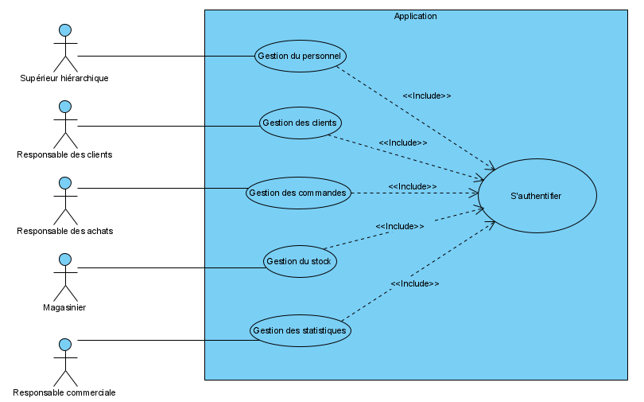
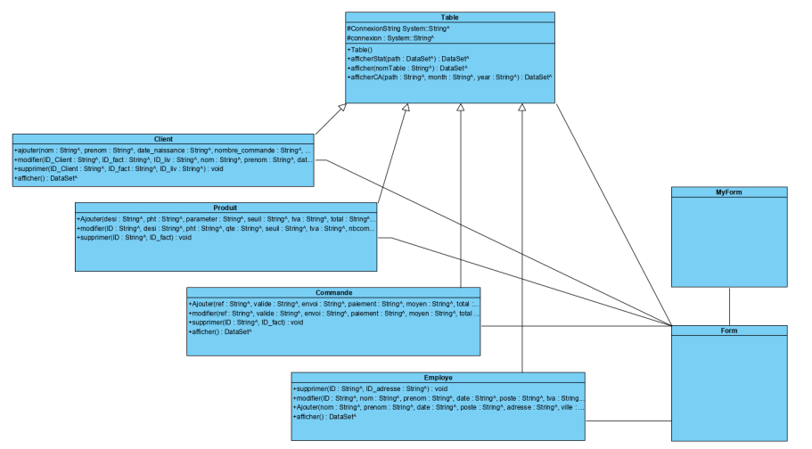
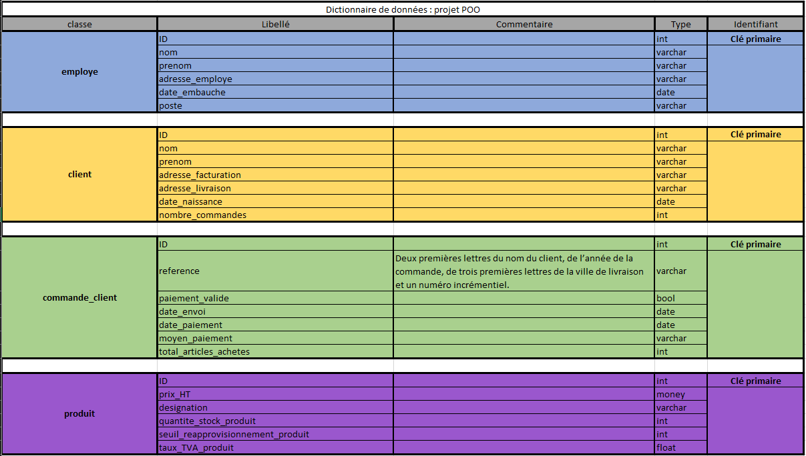
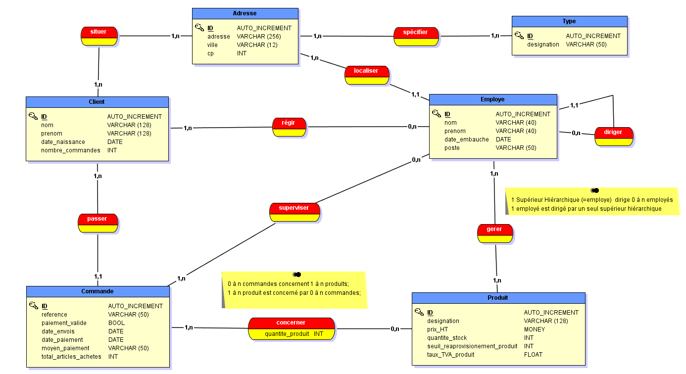
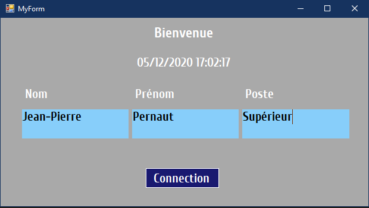
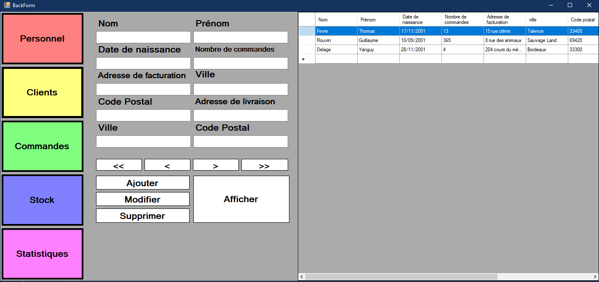

Une entreprise nous a contacté afin de digitaliser certains de ses services et faciliter la gestion de l'entreprise. La solution se présente sous forme d'application permettant d'intéragir avec la base de données de l'entreprise. Il s'agit principalement de Créer/ Afficher / Modifier / Supprimer - Des - Clients / Commandes / Personnels / Articles
Le projet dans son ensemble m'a permis d'apprendre :
- modélisation UML (cas d'utilisation révision, activité révision, séquence révision, classe)
- langage C++ et framework .NET (Winforms, ADO.NET)
- Programmation orientée objet (classe, objet, héritage, polymorphisme etc...)
- concevoir une architecture programme.
- Révision du langage SQL et premier pas sur SQL server.
- Utilisation de GitHub pour partager le travail et de Visual Studio comme IDE.
Analyse et Modélisation
L'application se divise en 5 parties, gestion du personnel / des clients / des commandes / du stock, et de statistiques.
chaque partie correspond à un cas d'utilisation et à un acteur différent.
Nous avons donc réalisé le diagramme de cas d'utilisations, que voici ci-dessous.
Diagramme de cas d'utilisations
Nous avons aussi réalisé des diagrammes de séquences afin de visualiser les foncionnalités demandées dans l'application. En voici un exemple.
Diagramme de séquence, créer un personnel

Nous avons bien sûre réaliser un diagramme de classe qui a bien évolué durant le projet. Par conséquent je vous montre la version qui représent notre architecture programme à la fin du projet.
Diagramme de classe de fin de projet
Base de données
Notre application c++/cli et rattacher à une base de données SQL server. Il nous a donc fallu créer cette base de données en commançant bien sûre par un dictionnaire de données. En découle le modèle conceptuel de données afin de déterminer les tables et relations de notre base de données. Et voici le Dictionnaire de données et le MCD.
Dictionnaire de données
Modèle conceptuel de données
Réalisation programme
L'application se divise sur deux WinForms, la première nous permet de s'authentifier afin d'accéder à l'interaction avec la base de données. Si les informations rentrées ne sont pas dans la base de données, on ne peut accéder à la deuxième form. Voici comment se présente cette première forme.
MyForm, WinForm pour s'authentifier
La deuxième Form se divise en 5 parties pour les 5 cas d'utilisations. Il y a une datagridview sur la gauche pour afficher les données de la base de données grâce à des requêtes SQL. Au centre des boutons pour naviguer dans la datagridview et remplissent automatiquement les textbox correspondantes juste au-dessus. Ensuite, dessous se trouve les boutons pour supprimer, créer et modifier les données dans la base données avec les informations comprises dans les textbox. Enfin le bouton afficher qui permet de raffraichir les données de la datagridview.
BackForm, WinForm pour intéragir avec la base de données
Lien vers le GitHub
Le programme complet se trouve sur GitHub, alors si cela vous intéresse le lien ci-dessous vous emmenera sur le GitHub.